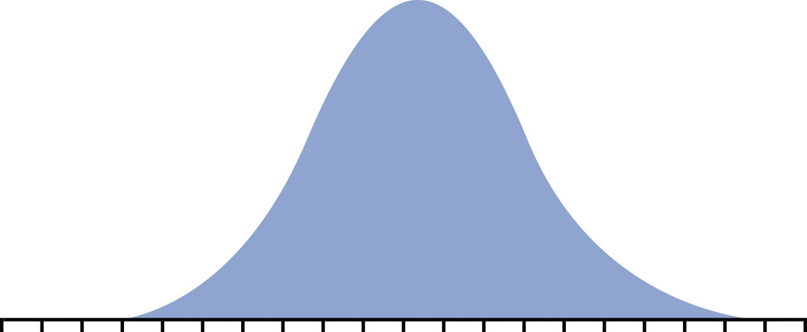
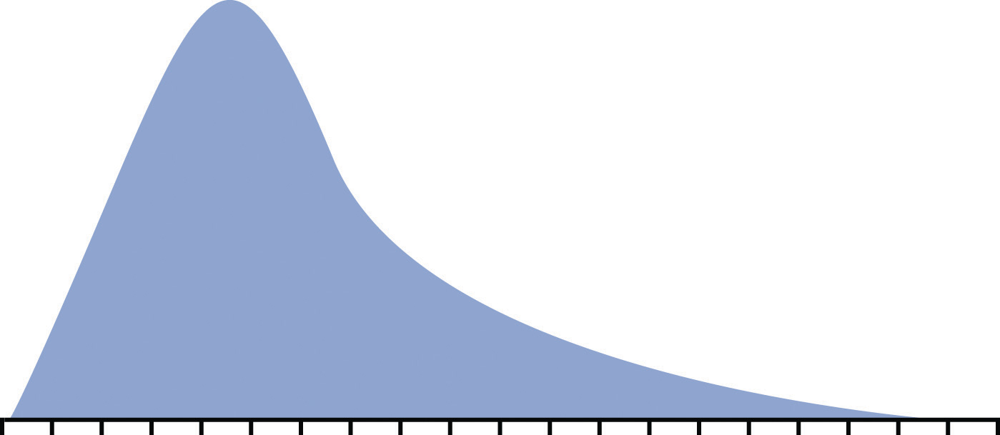
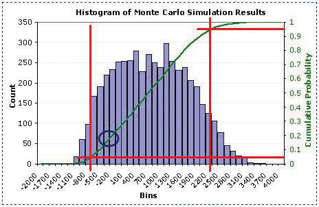

Project managers must be prepared to deal with adversity. Planning for events that can delay a project, decrease its quality, or increase its budget is a necessary part of project planning.
RiskPossibility of loss or injury. is the possibility of loss or injury.Merriam-Webster Online, s.v. “risk,” http://www.merriam-webster.com/dictionary/Risk (accessed August 21, 2009).Project riskAn uncertain event or condition that, if it occurs, has an effect on at least one project objective. is an uncertain event or condition that, if it occurs, has an effect on at least one project objective.Project Management Institute, Inc., A Guide to the Project Management Body of Knowledge (PMBOK Guide), 4th ed. (Newtown Square, PA: Project Management Institute, Inc., 2008), 273.Risk managementIdentification, evaluation, and mitigation of risk. focuses on identifying and assessing the risks to the project and managing those risks to minimize the impact on the project. There are no risk-free projects because there is an infinite number of events that can have a negative effect on the project. Risk management is not about eliminating risk but about identifying, assessing, and managing risk.
Tzvi Raz, Aaron Shenhar, and Dov DvirTzvi Raz, Aaron J. Shenhar, and Dov Dvir, “Risk Management, Project Success, and Technological Uncertainty,” R&D Management 32 (2002): 101–12. studied the risk management practices on one hundred projects in a variety of industries. The results of this study suggested the following about risk management practices:
Risk deals with the uncertainty of events that could affect the project. Some potential negative project events have a high likelihood of occurring on specific projects. Examples are as follows:
These are examples of known risksRisks that can be anticipated, such as exceptionally bad weather.. Known risks are events that have been identified and analyzed for which advanced planning is possible. Other risks are unknown or unforeseen.
On September 11, 2001, project team members were flying from various locations to a project review meeting in South Carolina when all flights were cancelled because of the attacks on the World Trade Center. Members of the leadership team could not make the meeting or return to their home base, and progress on the project, like many projects that day, was delayed.
Just before a project meeting in Texas, the engineering lead received word that his father had died in the middle of the night. The team delayed making decisions on some critical engineering events without the knowledge and judgment of the engineering manager.
On a project in Texas, the entire twelve-member masonry crew failed the drug screening test even though they had been told that drug screening was required on the project.
These events were unforeseen by the project team, and in all three cases the projects experienced schedule delays and additional costs.
Project risks are separate from the organizational risksPossible loss that is associated with the business purpose of the project. that are associated with the business purpose of the project.
A project was chartered to design and construct a copper mine at a cost not to exceed $1.2 billion. If a project is completed on time, within budget, and meets all quality specifications, the project is successful. If the price of copper drops below the profit threshold for the company, the organizational goals of the project may not be achieved. The price of copper is an organizational or business risk. The copper mining company authorized the project based on assumptions about the future price of copper. The price of copper is not a project risk on this project.
Planning for Known and Unknown Risks
Consider a trip that you might be planning. Describe at least five risks that are associated with taking the trip.
Managing risks on projects is a process that includes risk assessment and a mitigation strategy for those risks. Risk assessmentIdentification of the possibility for loss due to an event and an estimate of its effect. includes both the identification of potential risk and the evaluation of the potential impact of the risk. A risk mitigation planPlan to reduce or eliminate loss from unexpected events. is designed to eliminate or minimize the impact of the risk eventsPossible occurrence that may have a negative impact on the project.—occurrences that have a negative impact on the project. Identifying risk is both a creative and a disciplined process. The creative process includes brainstorming sessions where the team is asked to create a list of everything that could go wrong. All ideas are welcome at this stage with the evaluation of the ideas coming later.
A more disciplined process involves using checklists of potential risks and evaluating the likelihood that those events might happen on the project. Some companies and industries developed risk checklists based on experience from past projects. The Construction Industry InstituteConstruction Industry Institute Cost/Schedule Task Force, Management of Project Risks and Uncertainties (Austin, TX: Construction Industry Institute, 1989). developed a detailed checklist of potential risks based on the experience of several large construction companies executing major construction projects. These checklists can be helpful to the project manager and project team in identifying both specific risks on the checklist and expanding the thinking of the team. The past experience of the project team, project experience within the company, and experts in the industry can be valuable sources for identifying potential risk on a project.
Identifying the sources of risk by category is another method for exploring potential risk on a project. Some examples of categories for potential risks include the following:
The people category can be subdivided into risks associated with the people. Examples of people risks include the risk of not finding the skills needed to execute the project or the sudden unavailability of key people on the project. David HillsonDavid Hillson, “Using a Risk Breakdown Structure in Project Management,” Journal of Facilities Management 2, no. 1 (2003): 85–97. uses the same framework as the work breakdown structure (WBS) for developing a risk breakdown structure (RBS)Organization of risks associated with each activity in the work breakdown structure using a similar graphic approach.. A risk breakdown structure organizes the risks that have been identified into categories using a table with increasing levels of detail to the right.
In John’s move, John makes a list of things that might go wrong with his project and uses his work breakdown structure as a guide. A partial list for the planning portion of the RBS is shown below.
Figure 11.1 Risk Breakdown Structure (RBS)

The result is a more obvious understanding of where risks are most concentrated. Hillson’s approach helps the project team identify known risks but can be restrictive and less creative in identifying unknown risks and risks not easily found inside the work breakdown structure.
After the potential risks have been identified, the project team then evaluates the risk based on the probability that the risk event will occur and the potential loss associated with the event. Not all risks are equal. Some risk events are more likely to happen than others, and the cost of a risk event can vary greatly. Evaluating the risk for probability of occurrence and the severity or the potential loss to the project is the next step in the risk management process.
The Construction Industry Institute conducted a study of large construction project risk evaluation and categorized risk according to the potential impact of project costs. High-impact risk consisted of risks that could increase the project costs by 5 percent of the conceptual budget or 2 percent of the detailed budget. Only thirty potential risk events met these criteria. These were the critical few potential risk events that the project management team focused on when developing a project risk mitigation or management plan. Risk evaluation is about developing an understanding of which potential risks have the greatest possibility of occurring and can have the greatest negative impact on the project. These become the critical few.
Figure 11.2 Risk and Impact

There is a positive correlationTwo variables that respond in the same way to change in their environment.—both increase or decrease together—between project risk and project complexity. A project with new and emerging technology will have a high-complexity rating and a correspondingly high risk. The project management team will assign the appropriate resources to the technology managers to assure the accomplishment of project goals. The more complex the technology, the more resources the technology manager typically needs to meet project goals, and each of those resources could face unexpected problems.
Risk evaluation often occurs in a workshop setting. Building on the identification of the risks, each risk event is analyzed to determine the likelihood of occurring and the potential cost if it did occur. The likelihood and impact are both rated as high, medium, or low. A risk mitigation plan addresses the items that have high ratings on both factors—likelihood and impact.
For example, a project team analyzed the risk of some important equipment not arriving to the project on time. The team identified three pieces of equipment that were critical to the project and would significantly increase the costs of the project if they were late in arriving. One of the vendors, who was selected to deliver an important piece of equipment, had a history of being late on other projects. The vendor was good and often took on more work than it could deliver on time. This risk event (the identified equipment arriving late) was rated as high likelihood with a high impact. The other two pieces of equipment were potentially a high impact on the project but with a low probably of occurring.
Not all project mangers conduct a formal risk assessment on the project. There are barriers to identifying risks. David Parker and Alison MobeyDavid Parker and Alison Mobey, “Action Research to Explore Perceptions of Risk in Project Management,” International Journal of Productivity and Performance Management 53, no. 1 (2004): 18–32. found in a phenomenological study of project managers that there was a low understanding of the tools and benefits of a structured analysis of project risks. The lack of formal risk management tools was seen as a barrier to implementing a risk management program. The level of investment in formal risk management was also associated with managerial psychological dimensions.
Some project managers are more proactiveMaking decisions and taking action to anticipate an expected difficulty. and will develop elaborate risk management programs for their projects. Other managers are reactiveMaking decisions and taking action in response to events. and are more confident in their ability to handle unexpected events without prior planning, while some managers are risk averseA project manager or decision maker who avoids taking risks. and prefer to be optimistic and not consider risks or to avoid taking risks whenever possible.
On projects with a low complexity profile, the project manager may informally track items that may be considered risk items. On more complex projects, the project management team may develop a list of items perceived to be higher risk and track them during project reviews. On projects with greater complexity, the process for evaluating risk is more formal with a risk assessment meeting or series of meetings during the life of the project to assess risks at different phases of the project. On highly complex projects, an outside expert may be included in the risk assessment process, and the risk assessment plan may take a more prominent place in the project execution plan.
On complex projects, statistical models are sometimes used to evaluate risk because there are too many different possible combinations of risks to calculate them one at a time. One example of the statistical model used on projects is the Monte Carlo simulationA simulation that uses statistical processes to evaluate risk., which simulates a possible range of outcomes by trying many different combinations of risks based on their likelihood. The output from a Monte Carlo simulation provides the project team with the probability of an event occurring within a range and for combinations of events. For example, the typical output from a Monte Carol simulation may reflect that there is a 10 percent chance that one of the three important pieces of equipment will be late and that the weather will also be unusually bad after the equipment arrives.
After the risk has been identified and evaluated, the project team develops a risk mitigation plan, which is a plan to reduce the impact of an unexpected event. The project team mitigates risks in the following ways:
Each of these mitigation techniques can be an effective tool in reducing individual risks and the risk profile of the project. The risk mitigation plan captures the risk mitigation approach for each identified risk event and the actions the project management team will take to reduce or eliminate the risk.
Risk avoidanceChanging the project plan to eliminate a risk. usually involves developing an alternative strategy that has a higher probability of success but usually at a higher cost associated with accomplishing a project task. A common risk avoidance technique is to use proven and existing technologies rather than adopt new techniques, even though the new techniques may show promise of better performance or lower costs. A project team may choose a vendor with a proven track record over a new vendor that is providing significant price incentives to avoid the risk of working with a new vendor. The project team that requires drug testing for team members is practicing risk avoidance by avoiding damage done by someone under the influence of drugs.
Risk sharingPartnering with others to share responsibility for the risk activities. involves partnering with others to share responsibility for the risk activities. Many organizations that work on international projects will reduce political, legal, labor, and others risk types associated with international projects by developing a joint venture with a company located in that country. Partnering with another company to share the risk associated with a portion of the project is advantageous when the other company has expertise and experience the project team does not have. If the risk event does occur, then the partnering company absorbs some or all of the negative impact of the event. The company will also derive some of the profit or benefit gained by a successful project.
One example of risk sharing is a large United States construction firm that won a contract to build a pipeline in Peru. The company partnered with a construction company in Peru with a reputation for performing on time. The Peruvian company brought local expertise and the U.S. company contributed the latest construction methods. If the project had not successfully completed on time, both companies would have received less profit, but the project was successful and both companies met profit targets.
Risk reductionInvestment of funds to reduce the risk on a project. is an investment of funds to reduce the risk on a project. On international projects, companies will often purchase the guarantee of a currency rate to reduce the risk associated with fluctuations in the currency exchange rate. A project manager may hire an expert to review the technical plans or the cost estimate on a project to increase the confidence in that plan and reduce the project risk. Assigning highly skilled project personnel to manage the high-risk activities is another risk reduction method. Experts managing a high-risk activity can often predict problems and find solutions that prevent the activities from having a negative impact on the project. Some companies reduce risk by forbidding key executives or technology experts to ride on the same airplane.
Risk transferRisk transfer is the risk mitigation process of shifting the possible negative impact of an event to a party outside the project. is a risk reduction method that shifts the risk from the project to another party. The purchase of insurance on certain items is a risk transfer method. The risk is transferred from the project to the insurance company. A construction project in the Caribbean may purchase hurricane insurance that would cover the cost of a hurricane damaging the construction site. The purchase of insurance is usually in areas outside the control of the project team. Weather, political unrest, and labor strikes are examples of events that can significantly impact the project and that are outside the control of the project team.
The project risk plan balances the investment of the mitigation against the benefit for the project. The project team often develops an alternative method for accomplishing a project goal when a risk event has been identified that may frustrate the accomplishment of that goal. These plans are called contingency plans. The risk of a truck drivers strike may be mitigated with a contingency plan that uses a train to transport the needed equipment for the project. If a critical piece of equipment is late, the impact on the schedule can be mitigated by making changes to the schedule to accommodate a late equipment delivery.
On one project, the project team left a section of a roof unfinished to allow the installation of equipment after the building was done and the roof installed. The equipment was late, and the project would have been delayed if the building was not completed. The project team left a section of the roof unfinished to allow the equipment to be placed in the building with the use of a crane. The roof was then completed, and the project finished on time.
In this example, the equipment arriving on time to meet the project schedule was considered a high risk. One option was to delay the end of the project. The team developed a contingency plan to install the roof in two phases to allow the installation of the equipment, if it was late. The contingency plan was more expensive and contingency funds were placed in the budget to cover the possibility that the equipment would be late.
Contingency funds are funds set aside by the project team to address unforeseen events that cause the project costs to increase. Projects with a high-risk profile will typically have a large contingency budget. Although the amount of contingency allocated in the project budget is a function of the risks identified in the risk analysis process, contingency is typically managed as one line item in the project budget.
Some project managers allocate the contingency budget to the items in the budget that have high risk rather than developing one line item in the budget for contingencies. This approach allows the project team to track the use of contingency against the risk plan. This approach also allocates the responsibility to manage the risk budget to the managers responsible for those line items. The availability of contingency funds in the line item budget may also increase the use of contingency funds to solve problems rather than finding alternative, less costly solutions. Most project managers, especially on more complex projects, will manage contingency funds at the project level, with approval of the project manager required before contingency funds can be used.
Risk Management
Assume that you are involved in planning a wedding. What are three risks that might affect the ceremony or reception, and how would you mitigate the impact of those risks? For example, if you are planning an outdoor wedding, describe the backup plan in case of rain.
Project risk is dealt with in different ways depending on the phase of the project.
Risk is associated with things that are unknown. More things are unknown at the beginning of a project, but risk must be considered in the initiation phase and weighed against the potential benefit of the project’s success in order to decide if the project should be chosen.
In the initiation phase of John’s move, John considers the risk of events that could affect the whole project. He identifies the following risks during the initiation phase that might have a high impact and rates the likelihood of their happening from low to high.
John considers how to mitigate each of the risks.
John concludes that the high-impact risks can be mitigated and the costs from the mitigation would be acceptable in order to get a new job.
Once the project is approved and it moves into the planning stage, risks are identified with each major group of activities. A risk breakdown structure (RBS) can be used to identify increasing levels of detailed risk analysis.
John decides to ask Dion and Carlita for their help during their first planning meeting to identify risks, rate their impact and likelihood, and suggest mitigation plans. They concentrate on the packing phase of the move. They fill out a table of risks, as shown below.
Figure 11.5 Risk Breakdown Structure (RBS) for Packing John’s Apartment
As the project progresses and more information becomes available to the project team, the total risk on the project typically reduces, as activities are performed without loss. The risk plan needs to be updated with new information and risks checked off that are related to activities that have been performed.
Understanding where the risks occur on the project is important information for managing the contingency budget and managing cash reserves. Most organizations develop a plan for financing the project from existing organizational resources, including financing the project through a variety of financial instruments. In most cases, there is a cost to the organization to keep these funds available to the project, including the contingency budget. As the risks decrease over the length of the project, if the contingency is not used, then the funds set aside by the organization can be used for other purposes.
To determine the amount of contingency that can be released, the project team will conduct another risk evaluation and determine the amount of risk remaining on the project. If the risk profile is lower, the project team may release contingency funds back to the parent organization. If additional risks are uncovered, a new mitigation plan is developed including the possible addition of contingency funds.
During the closeout phase, agreements for risk sharing and risk transfer need to be concluded and the risk breakdown structure examined to be sure all the risk events have been avoided or mitigated. The final estimate of loss due to risk can be made and recorded as part of the project documentation. If a Monte Carlo simulation was done, the result can be compared to the predicted result.
To close out the risk mitigation plan for John’s move, John examines the risk breakdown structure and risk mitigation plan for items that need to be finalized. He makes a checklist to be sure all the risk mitigation plans are completed, as shown below.
Figure 11.6 Closeout of Risk Mitigation Plan for John’s Move
Risk is not allocated evenly over the life of the project. On projects with a high degree of new technology, the majority of the risks may be in the early phases of the project. On projects with a large equipment budget, the largest amount of risk may be during the procurement of the equipment. On global projects with a large amount of political risk, the highest portion of risk may be toward the end of the project.
Risk Assessment
Recall a project that you considered at one time but decided against during the initiation phase because the risks were too great or the mitigation plan was insufficient to proceed. Describe the project, the risks, the mitigation plan, and why you chose not to go forward.
Risk seems to have a positive correlation to complexity. High-risk projects are in most cases highly complex. The process of conducting a risk analysis focuses on understanding what can go wrong and the likelihood that it will go wrong. The project team then develops a project mitigation plan that addresses the items that were identified as high risk. The complexity analysis explores the project from the perspective of what elements on the project add to project complexity. The result of this analysis is the information needed by the project leadership to develop an appropriate execution plan. This execution plan also contains the risk management plan.
Although increased complexity on a project increases the project risk profile, risk is only one component of the complexity profile, and the manageability of the risk is also reflected in the complexity level of the project. For example, the organizational component of the project may be extremely complex with decision making shared among several independent clients. The project management team will develop an execution plan that includes developing and maintaining alignment among the various clients. Although the organizational risk of the project decreases with the development of the execution plan, the organizational approach of the client did not change the complexity level of the project. If the Darnall-Preston Complexity Index (DPCI) is used to rate the project, high ratings in each category carry their own types of increased risks.
Projects that have a high score in the external complexity category in the DPCI are larger and longer than usual for the project management group and the project manager and the available resources are lacking. Due to lack of experience on this size project, unknown risks are significant. The inadequacy of resources will cause risks that are more predictable.
Projects with high scores for internal complexity have risks to the budget, schedule, and quality due to organizational complexity and changes of scope due to lack of clarity in project and scope statements.
High scores in technological complexity are associated with high levels of risk due to unknown flaws in the technology and lack of familiarity with it. These problems result in risks to the schedule, budget, and quality.
Environmental complexity includes legal, cultural, political, and ecological factors. High scores for complexity in this category imply high risks for delay and expensive resolution to lawsuits, public opposition, changes for political considerations, and unforeseen ecological impacts.
Environmental Risks
Identify a project with which you are familiar or one that has been in the news recently where the external environmental complexity caused increased costs or delays. Describe the impact of the risk, and the mitigation and its effectiveness. If the mitigation was ineffective, describe how you might have prepared a different mitigation plan.
Exercises at the end of the chapter are designed to strengthen your understanding and retention of the information recently acquired in the chapter.
Write several paragraphs to provide more in-depth analysis and consideration when answering the following questions.
The exercises in this section are designed to promote exchange of information among students in the classroom or in an online discussion. The exercises are more open ended, which means that what you find might be completely different from what your classmates find, and you can all benefit by sharing what you have learned.
Planning for risks is a form of betting on the future. An accomplished gambler knows the odds of drawing a certain combination of cards in a poker hand or of a ball landing on a number at a roulette wheel. If a project has several risk factors, they are not likely to all occur on the same project, but it is important to know the odds of that happening and to compare them to the potential profit of the project. If several risks do materialize on the same project, it might cause the company to lose money on the project, and senior management must decide if the benefit is worth the risk.
Computers can generate random numbers that can be used to simulate the likelihood of combinations of risk factors occurring and the impact on the project’s profitability. These simulations calculate odds like those a gambler would use before placing a bet, and the process is named after a famous gambling center in Europe.
To use a Monte Carlo simulation, you have to decide how the frequency of occurrences is distributed. Three types of distributions are most common: normal, skewed, and equal. If they are governed by the central limits principle, the occurrences will have a normal distribution.
Figure 11.7 Normal Distribution
If the likely frequency of occurrences of a risk factor is more likely to be distributed to either side of the middle of the range, it is a skewed distribution.
Figure 11.8 Skewed Distribution
If the likelihood of occurrence is evenly distributed across the range where each possibility has the same odds of occurring, it is an equal distribution.
Figure 11.9 Equal Distribution

A computer can choose numbers for each risk factor that represent a possible outcome for that risk on the project according to its distribution. Those numbers are fed into a spreadsheet that determines the effect on the project and its costs. This process is repeated thousands of times, and the result of each iteration—repeated process—is stored in a table of possible outcomes. This table is summarized in a histogram that shows how many of the iterations produced profit (or loss) in each range (bin).
The outcome of a Monte Carlo simulation gives managers an idea of how much the project could make or lose and the odds of that happening. Monte Carlo simulations are often used to predict the likelihood of a new product making a profit or loss. The same methods can be applied to predicting the profit or loss on a project.
Complete the exercise by following these instructions:
Near the bottom of the first screen, click the arrow labeled Sales Forecast Example, as shown in Figure 11.10 "Next Page Button".
Continue reading and advancing screens until you get to the histogram as shown in Figure 11.11 "Estimated Loss or Profit".
Figure 11.11 Estimated Loss or Profit
Source: Adapted from Wittwer, J.W., "Creating a Histogram In Excel" from www.vertex42.com, June 1, 2004, http://vertex42.com/ExcelArticles/mc/Histogram.html.
Complete the exercise by following these instructions:
Read each of the first seven screens. Capture screens where indicated in the following list and paste them into Ch11MonteCarloStudentName.doc:
The authors make the case that a simple average of the risks produces an estimate that is too high. If they run a thousand combinations of risk outcomes, they predict a lower profit and a certain likelihood of losing money. In the word processing document, below the last screen capture, review the screens and answer the following questions:
Review your work and use the following rubric to determine its adequacy:
| Element | Best | Adequate | Poor |
|---|---|---|---|
| File name | Ch11MonteCarloStudentName.doc | .docx version | Student name not included |
| Describe the benefits of estimating risk using a Monte Carlo simulation | Two screen captures plus a description of how the chart is used to estimate the percentage chance of losing money; three screen captures and answers to the three questions; description of the benefits of a Monte Carlo simulation | Same as Best | Missing screens; inaccurate estimates; incorrect answers to the three questions; description without specific references |